Genetics In Action: Evolutionary Algorithms
Kevin Feasel (@feaselkl)https://csmore.info/on/gia
Who Am I? What Am I Doing Here?


Motivation
My goals in this talk:
- Introduce you to evolutionary algorithms
- Explain the intuition behind genetic algorithms and genetic programming
- Look at use cases for evolutionary programming
What We'll Do

What We'll Do
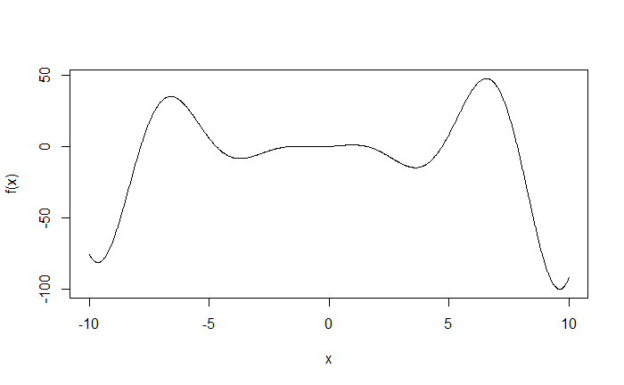What We'll Do
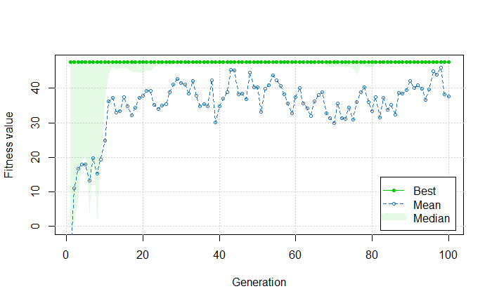What We'll Do
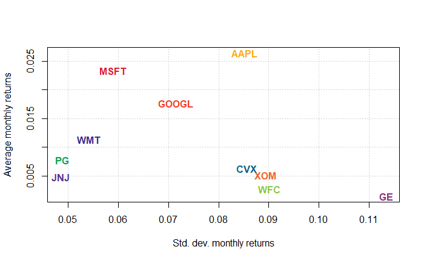What We'll Do
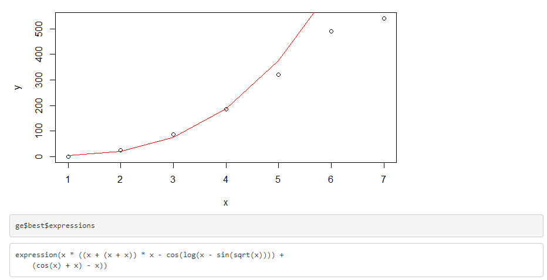Agenda
- What Are Evolutionary Algorithms?
- Genetics Crash Course
- Genetic Algorithms
- Genetic Programming
- Alternatives to Evolution
What Are Evolutionary Algorithms?
Evolutionary algorithms are great at solving a particular type of problem:
- Gigantic search space
- Known way to score answers
- The solution is too complex to do by hand
- We expect that known tools can achieve a solution
Evolutionary algorithms also perform extremely well when the environment (and thus the best solution) changes regularly.
What Are Evolutionary Algorithms?
Good uses for Evolutionary Algorithms: NP-Hard problems.
- Optimization: min/max, circuit layout, Traveling Salesman Problem, Knapsack Problem
- ML: building weights for neural nets, rules for classifiers, or training sensors
- Economics: bidding strategies (e.g., portfolio bidding), game theory
- Ecology: host-parasite co-evolution, symbiosis, resource flow
Evolutionary Algorithms help solve min-max problems and can avoid hill-climbing issues.
What Are Evolutionary Algorithms?
Evolutionary Algorithms tend to solve hill-climbing problems:
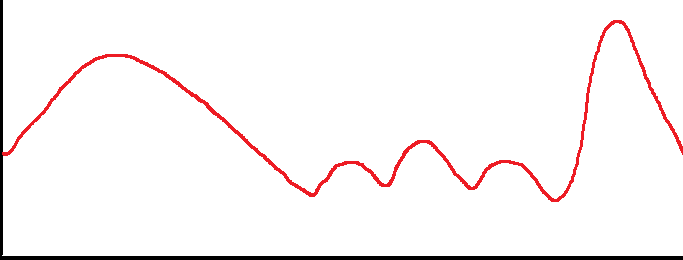
Many algorithms tend to get stuck at local maxima/minima; EAs often don't.
Heuristics for Good Solutions
- Correctness – We can find the a priori correct solution.
- Consistency – Repeat the problem, repeat the answer.
- Justifiability – Cause implies effect.
- Certainty – Chance should not be part of the solution.
- Orderliness – The process is a logical, step-by-step process in which each step leads to the next.
- Parsimony – Simpler is ceteris paribus better.
- Decisiveness – Once a solution is found, the problem is solved.
Evolutionary algorithms guarantee none of these properties.
What Are the Limitations?
Going further, evolutionary algorithms have a number of limitations:
- No guarantee of a solution
- No guarantee of good performance in reasonable time
- Answers will likely differ each run
- Often hard to tell when to stop
- Can still get stuck at a local min/max
- Solutions are not parsimonious
But...they do still tend to get the job done.
Agenda
- What Are Evolutionary Algorithms?
- Genetics Crash Course
- Genetic Algorithms
- Genetic Programming
- Alternatives to Evolution
Genetics Crash Course
Evolutionary Algorithms are modeled after simplified forms of biological processes.

Creative Commons. Author: John Gould
Genes and Chromosomes
Organisms have chromosomes, whose purpose is to carry genes. In Evolutionary Algorithms, "organisms" (candidate solutions) typically have one chromosome.
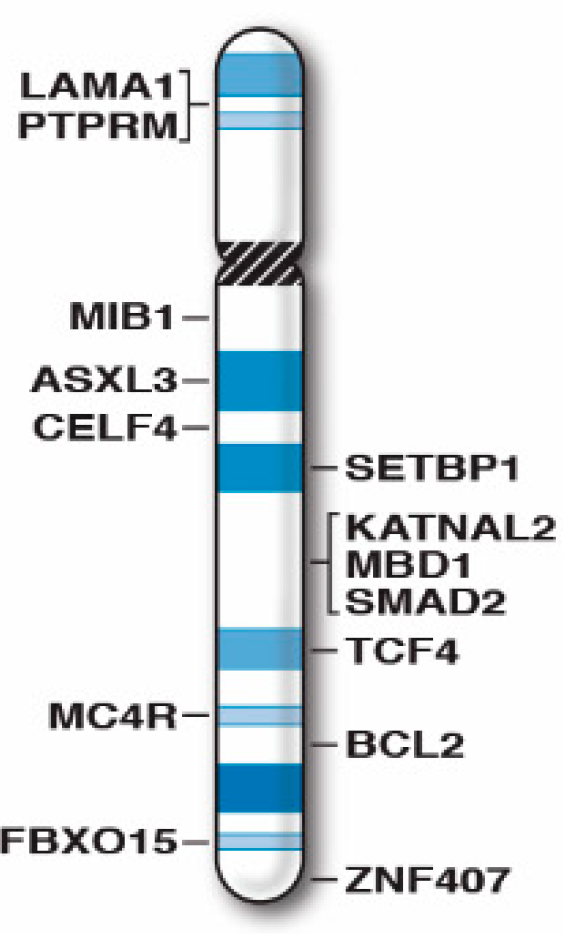
Creative Commons. Author: Merlin G. Butler, et al.
{kind=link}
Genotypes and Alleles
Genes make up DNA sequences called genotypes. Each gene has a number of alternative forms, called alleles.
Genotypes are possible genetic structures. Given 2 alleles for each of 32 genes, we would have 2^32 or 4,294,967,296 genotypes.
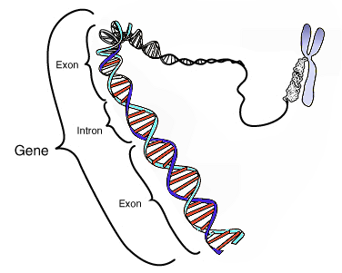
Creative Commons. Courtesy: National Human Genome Research Institute.
{kind=link}
Phenotypes
Phenotypes are observable physical characteristics based on specific genotypes. This might be coloration, height, size, or beak structure.
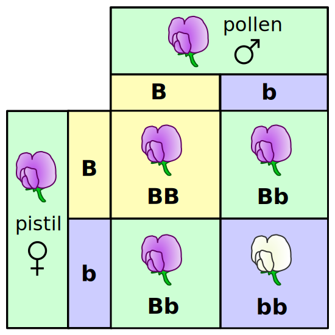
Creative Commons. Author: Madeline Price Ball
{kind=link}
Genotypes and Phenotypes
BEWARE: there is not a 1:1 correspondence between genotypes and phenotypes, as phenotypes often depend upon a specific combination of alleles. When even one allele is missing, the desired effect may not appear. Close doesn't count with genetics.
Environmental Niches
The environmental niche is a set of features which certain phenotypes might be able to exploit. Example: thicker fur for northern climes.
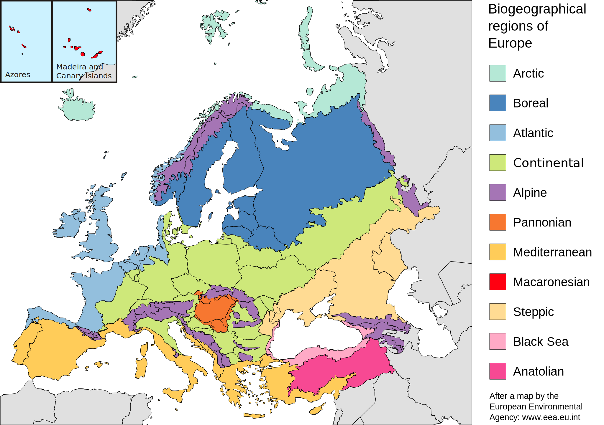
Creative Commons. Author: Julio Reis
{kind=link}
Agenda
- What Are Evolutionary Algorithms?
- Genetics Crash Course
- Genetic Algorithms
- Genetic Programming
- Alternatives to Evolution
Genetic Algorithms
Genetic algorithms were popularized with John Holland's work on the topic, particularly Adaptation in Natural and Artificial Systems.
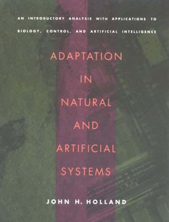
Demo Time
Applying Terms
- Organism = candidate solution
- Chromosome = solution array
- Gene = element of the solution array
- Locus = position of element in the array
- Allele = specific value for a gene
- Environmental niche = fitness function
Genetic Algorithms
Most simple genetic algorithms are arrays of genes with binary alleles:
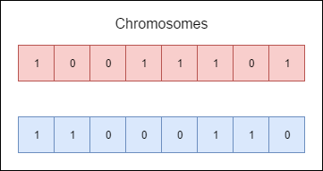We build up a population of organisms, large enough to ensure genetic diversity.
Genetic Algorithms
After building the population, we score each chromosome using the same fitness function:
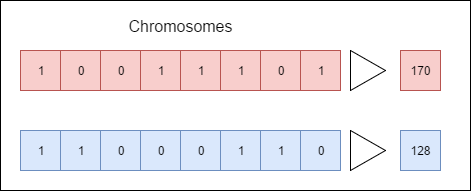Now each chromosome has its own score and can compare to other chromosomes.
Genetic Algorithms
For each organism (or pair of organisms) in the next generation, determine two "parents" based on some algorithm. A simple algorithm is roulette wheel, where we pull based on percentage fitness.
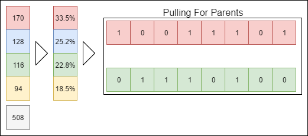Genetic Algorithms
We then apply crossover with some probability. If that RNG pull succeeds, we cross over at some starting and ending point (also RNG determined):
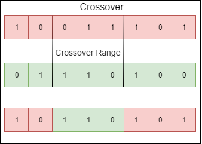Typically, there is one crossover range per organism pair. Sometimes, the crossover check fails and we keep the two parents. Usually we perform crossover with p = [0.6, 0.8].
Genetic Algorithms
For each gene in each new organism, we apply some mutation operation:
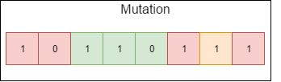Mutation is a tool to help us get out of local maxima, but too much mutation and you have random search. Usually we perform mutation with p = [0.0001, 0.01]
Genetic Algorithms
Now we have a new organism, which is hopefully better than the old organisms in terms of solving our fitness function:
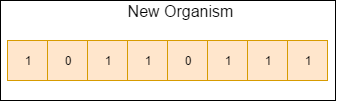Repeat for each organism in the next generation, and repeat the process.
Good Use Cases
- Knapsack problem
- Portfolio selection
- Traveling Salesman Problem
- The Holyfield Problem
The Holyfield Problem
The Holyfield Problem comes from Evander Holyfield's Real Deal Boxing for the Sega Genesis.
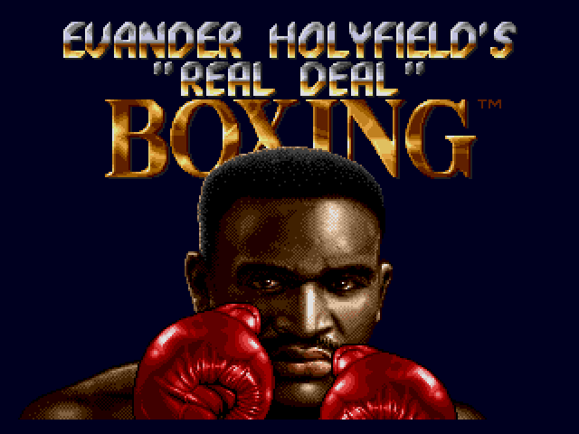
The Holyfield Problem
You have several options to help make your boxer the best but a limited budget that prohibits you from taking everything. How do you make the right decisions?
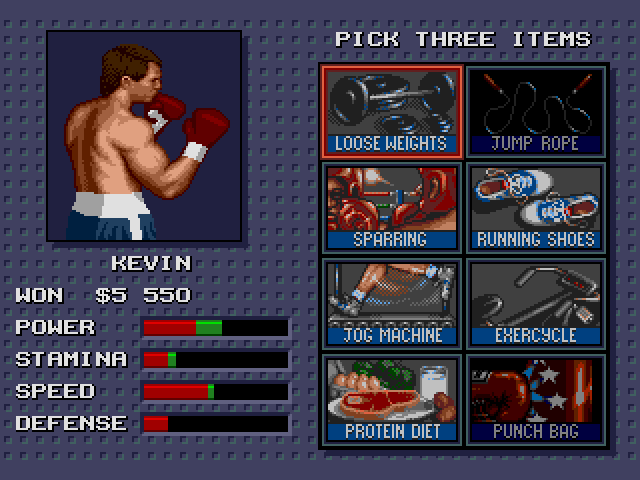
Demo Time
The Holyfield Problem
Result: genetic algorithms let us choose the best set of options, making our boxer the best there is.
Portfolio Selection
We want to maximize returns for a portfolio while minimizing risk.
Demo Time
Traveling Salesman Problem
We want to minimize total travel distance while hitting every location exactly once.

Takeaways
- Solutions exist in multiple languages, including R, Python, .NET, and Java.
- Genetic algorithms cut through the search space, tending to start off unfocused and honing in on a solution over the course of generations.
- Genetic algorithms are powerful in part because they do not assume anything about what good genotypes look like, except for what the fitness function tells us.
Agenda
- What Are Evolutionary Algorithms?
- Genetics Crash Course
- Genetic Algorithms
- Genetic Programming
- Alternatives to Evolution
Genetic Programming
John Koza popularized Genetic Programming with his eponymous series of books.
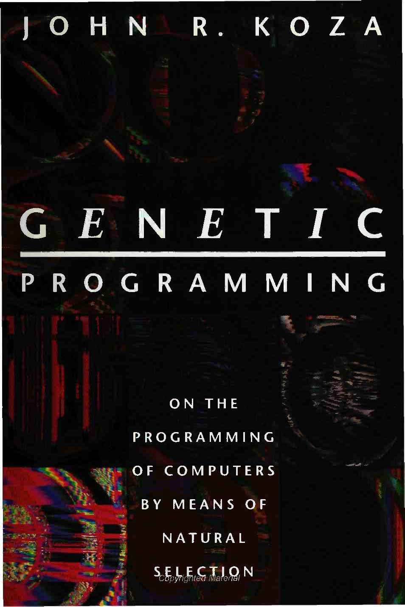
Demo Time
Genetic Programming
Genetic programming is an extension of genetic algorithm concepts. Genetic algorithms feature fixed-sized chromosomes with data-representational alleles.
Genetic programming takes the mechanisms of genetic algorithms and applies it to a higher-level problem.
Comparison to Genetic Algorithms
Similarities:
- Populations of candidate solutions
- Fitness functions
- New generations of candidate solutions
- Crossover and mutation operations
But there's one major difference: the organisms/chromosomes are entire programs.
Genetic Programming
Suppose we want to solve a problem where the fitness function is (56 - x)^2. One candidate solution:
Genetic Programming
In practice, genetic programs are significantly less parsimonious.
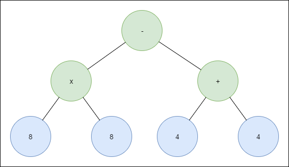Mathematical Formulas
Genetic programs are great for deriving mathematical relationships.
Demo Time
Mathematical Formulas
Genetic programs can help us derive non-linear function results, similar to a regression model. If you are regressing, beware that genetic programs will overtrain on the current data; they're much more useful for identifying formulas.
DBA Salaries
Another use for genetic programming is building regression trees, which use decision tree mechanics but solve the same problem as a regression model: predicting the dependent variable's value.
For example: how much should you be making?
Demo Time
DBA Salaries
Our regression tree was not better than a linear regression based on the attributes we selected, but was more understandable to a layman. In other cases, we can end up with better results.
Takeaways
Agenda
- What Are Evolutionary Algorithms?
- Genetics Crash Course
- Genetic Algorithms
- Genetic Programming
- Alternatives to Evolution
Reinforcement Learning Flow
- Single agent tries an action
- Agent receives a reward based on how it did
- Agent tries something new and compares reward
- Agent tracks different 'reward paths' and focuses down on more rewarding sets of options
There's some similarity to evolutionary algorithms!
How Reinforcement Learning Differs
Reinforcement Learning:
- Maximize an expected sum of reward
- Typically focuses on one agent
- More mathematically grounded
- "Intra-life" learning leads to 'experience replay' (remembering good prior outcomes)
Genetic Algorithms:
- Maximize the fitness of a population
- Focuses on one population made up of many agents
- More heuristically organized
- "Inter-life" learning focuses on passing on knowledge to next generation
Why Not Both?
Paper by Irmouli, et al: Genetic Algorithm enhanced by Deep Reinforcement learning in parent selection mechanism and mutation
- Dynamically change selection and mutation criteria based on generational shifts
- Might help with faster convergence on complicated problems
Neural Networks
Neural networks have dominated machine learning and artificial intelligence over the past 12+ years. They tend to be significantly better at approximating functions with continuous data, such as image classification or regression techniques.
Genetic algorithms work best with broad-spaced and complicated search spaces.
Why Not Both? -- MarI/O
Genetic algorithms provide the fitness function for a neural network to solve a Super Mario World level.
Video link: https://www.youtube.com/watch?v=qv6UVOQ0F44
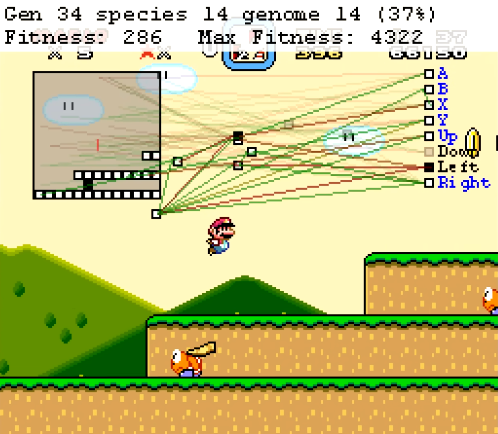
Takeaways
- Genetic algorithms are not the same thing as neural networks or reinforcmeent learning.
- Genetic algorithms can be competitive versus reinforcement learning or neural networks in certain spaces, especially broad-based and complex optimization problems.
- Genetic algorithms can work together with reinforcement learning or neural networks, generating better outcomes than using either on its own.
Wrapping Up
Evolutionary algorithms, including genetic algorithms and genetic programming, offer up an interesting approach to navigating large hill-climbing type search spaces with adequate efficiency and relatively high likelihood of avoiding local minima/maxima.
Wrapping Up
To learn more, go here:
https://csmore.info/on/gia
And for help, contact me:
feasel@catallaxyservices.com | @feaselkl
Catallaxy Services consulting:
https://CSmore.info/contact